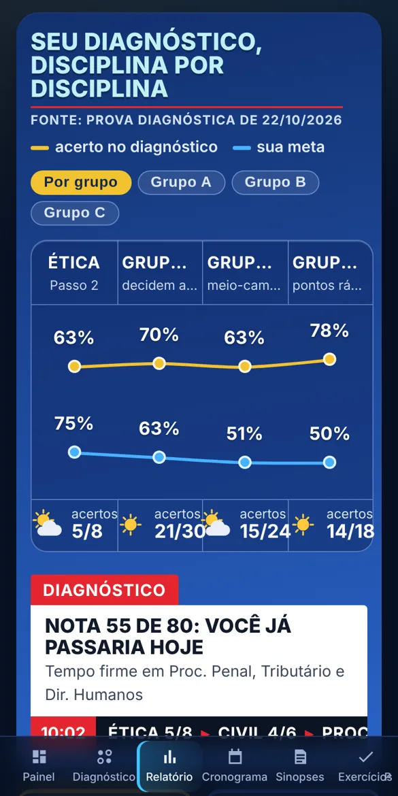
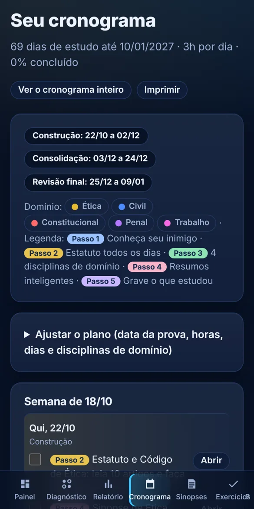
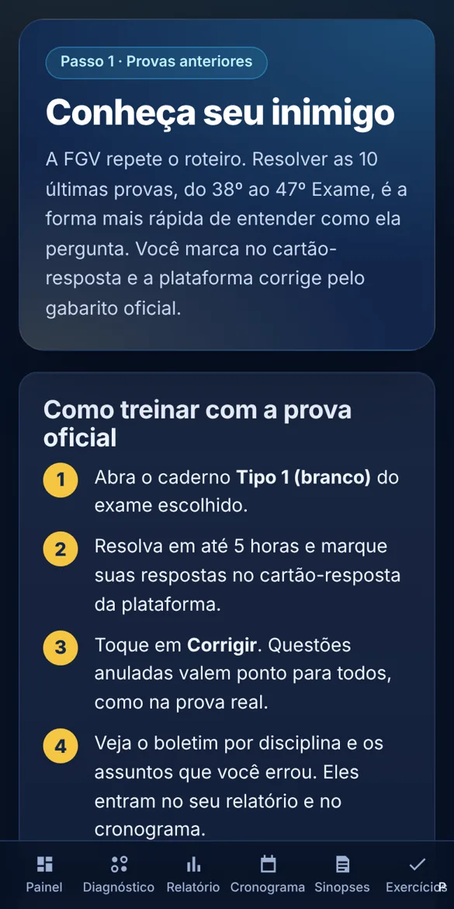
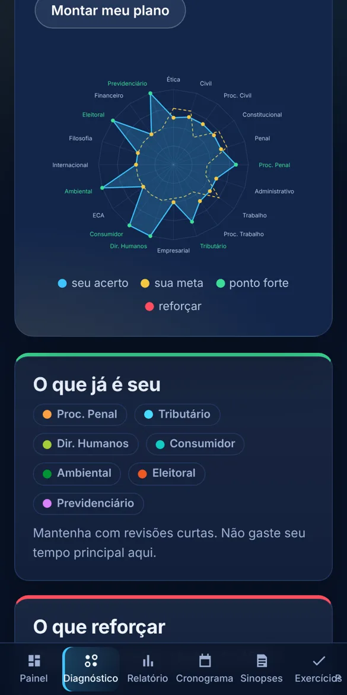
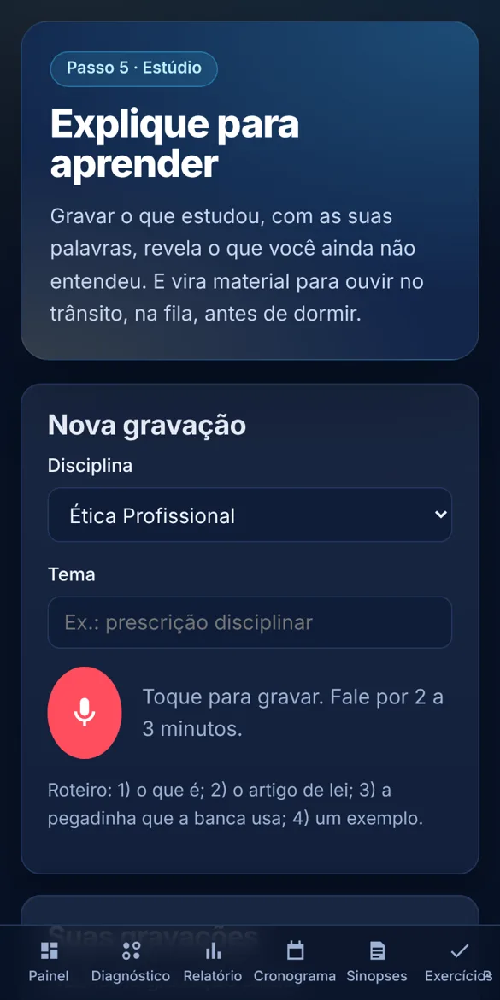

Chega dereprovar.
Você não precisa estudar as 20 disciplinas. Precisa estudar o que a FGV cobra, na ordem certa, até chegar aos 40 pontos. A plataforma mostra onde você está e o que fazer hoje.

Reprovar não é
falta de inteligência.
É estudar tudo com a mesma força, quando a prova não pesa tudo igual.
Tentar dominar todas leva ao cansaço e à sensação de nunca terminar.
Semanas em matérias que valem 2 pontos, enquanto as de 6 e 8 ficam para depois.
Não é uma prova para gabaritar. É uma prova para acertar o suficiente.
Não é estudar menos.
É estudar onde está a nota.
Quantas questões cada disciplina vale
Distribuição observada nas 10 últimas provas da FGV (38º ao 47º Exame). A ordem e a quantidade não mudaram em nenhuma delas.
A conta da aprovação
Ética + 4 disciplinas do Grupo A somam 32 das 80 questões.
Acertando 3 de cada 4 nelas, você faz 24 pontos.
Faltam 16 entre as outras 48: 1 em cada 3.
Aprovado para a 2ª fase, sem dominar as 20 disciplinas.
O Método dos 5 Passos,
transformado em treino.
Cada passo do método virou uma ferramenta. Você abre no celular ou no computador, e seu progresso fica salvo.

Uma prova oficial, com correção na hora
Você responde e já vê se acertou, com a explicação e o artigo de lei. Pode pausar e continuar depois.

Seu raio-X nas 20 disciplinas
Nota projetada, onde você já pontua, onde perde pontos e as 4 disciplinas de domínio sugeridas para você.

Um GPS até o dia da prova
Plano dia a dia com a missão diária de Ética, dividido em construção, consolidação e revisão final.

As 10 últimas provas da FGV
Do 38º ao 47º Exame, com cartão-resposta e gabarito oficial. Cada novo diagnóstico usa outra prova: nunca repete.

O essencial de cada disciplina
Sinopses de uma página com os temas que mais caem e as pegadinhas da banca, e exercícios por disciplina.

Grave e ouça onde estiver
Grave pelo celular explicando o tema, com roteiro na tela, e ouça no trajeto, na fila, antes de dormir.
Da compra ao diagnóstico
em 5 minutos.
Escolha seu plano
Pague no checkout seguro, no cartão em até 12x ou no Pix.
Receba o acesso
A liberação é automática. Chega um e-mail para você criar sua senha.
Faça o diagnóstico
Uma prova oficial completa mostra sua nota hoje, disciplina por disciplina.
Siga o plano
Uma missão por dia e uma prova oficial por semana até os 40 pontos.

Adonias Lopes
de Araújo
Advogado há mais de 10 anos, OAB/GO 50.607, com atuação em Direito Civil, do Consumidor, Trabalhista e Tributário.
Criei o método quando estudava para a OAB, treinando com provas anteriores. Passei. Dez anos depois, refiz as duas provas mais recentes sem estudar nada e tirei 56% e 65% — acima dos 50% que aprovam. Não foi sorte: foi saber onde estão os pontos. É esse caminho que a plataforma entrega.
Escolha como
quer chegar lá.
1ª fase · Acesso até a aprovação
Seu acesso não vence enquanto você não passar na 1ª fase. Não passou neste exame? Continua treinando para o próximo, sem pagar de novo.
- Diagnóstico com prova oficial e relatório raio-X
- As 10 últimas provas da FGV com correção na hora
- Cronograma dia a dia até a data da prova
- Sinopses e exercícios das 20 disciplinas
- Estúdio de áudio
- Acesso pelo celular e computador
Preparação completa · 1ª e 2ª fase
Tudo do plano da 1ª fase e, depois da aprovação, a preparação para a prova prático-profissional da 2ª fase.
- Tudo do plano da 1ª fase
- Preparação para a 2ª fase
- Um só pagamento para as duas etapas
Garantia incondicional. Assine, faça seu diagnóstico e use a plataforma por 7 dias. Se não fizer sentido para a sua rotina, peça o reembolso direto na plataforma de pagamento — sem perguntas.
Perguntas
frequentes.
Como recebo o acesso depois de pagar?
Automaticamente. Assim que o pagamento é aprovado, você recebe um e-mail com o link para criar sua senha. Use o mesmo e-mail que informou na compra. No Pix chega em poucos minutos; no cartão, assim que a operadora aprovar.
O que significa "acesso até a aprovação"?
Seu acesso ao plano da 1ª fase não vence enquanto você não for aprovado na 1ª fase. Se não passar em um exame, continua treinando para o próximo sem pagar de novo.
As provas da plataforma são reais?
Sim. São as 10 últimas provas da 1ª fase aplicadas pela FGV (38º ao 47º Exame), corrigidas pelo gabarito oficial, com as questões anuladas contadas a seu favor.
Já reprovei mais de uma vez. Serve para mim?
Foi feito para isso: para quem estudou tudo, cansou e precisa de prioridade, não de mais conteúdo.
Preciso fazer cursinho junto?
Não é obrigatório. O método funciona sozinho e também organiza o cursinho que você já faz.
Funciona no celular?
Sim. A plataforma abre no navegador do celular ou do computador, sem instalar nada, e guarda seu progresso.
E se eu não gostar?
Você tem 7 dias de garantia. Peça o reembolso pela plataforma de pagamento e recebe o valor de volta.
A próxima prova pode ser
a última 1ª fase da sua vida.
Comece hoje pelo diagnóstico e descubra quantos pontos faltam para os 40.
Quero começar agora →